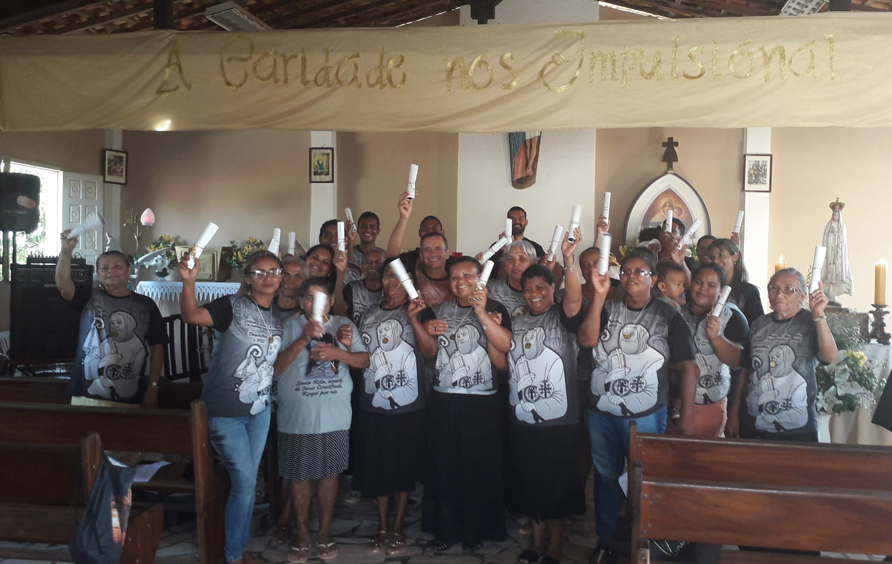
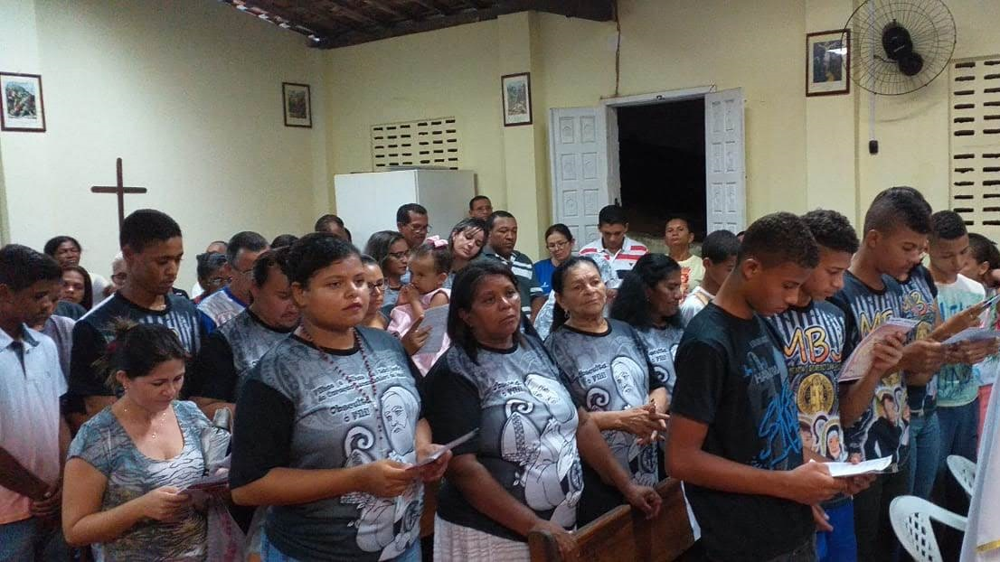
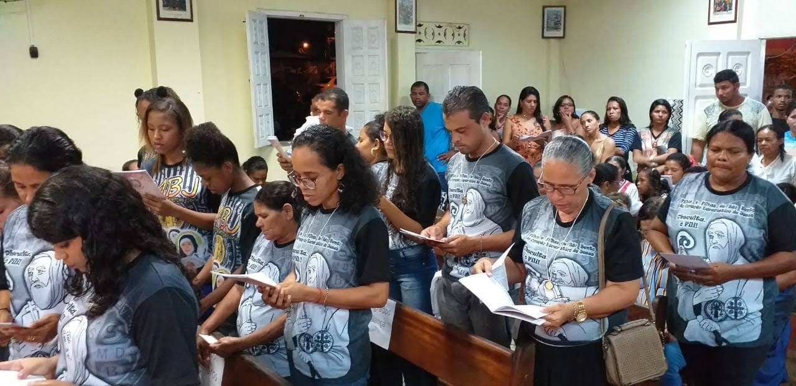
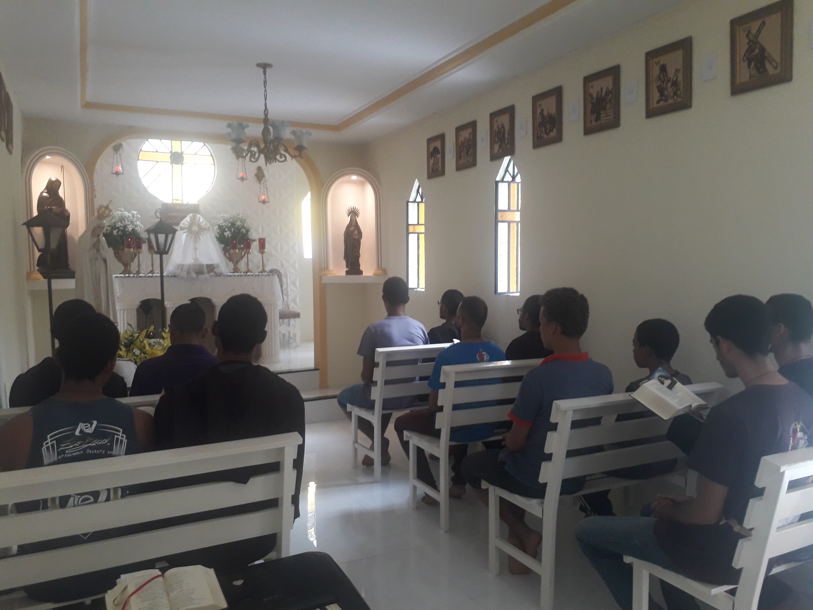
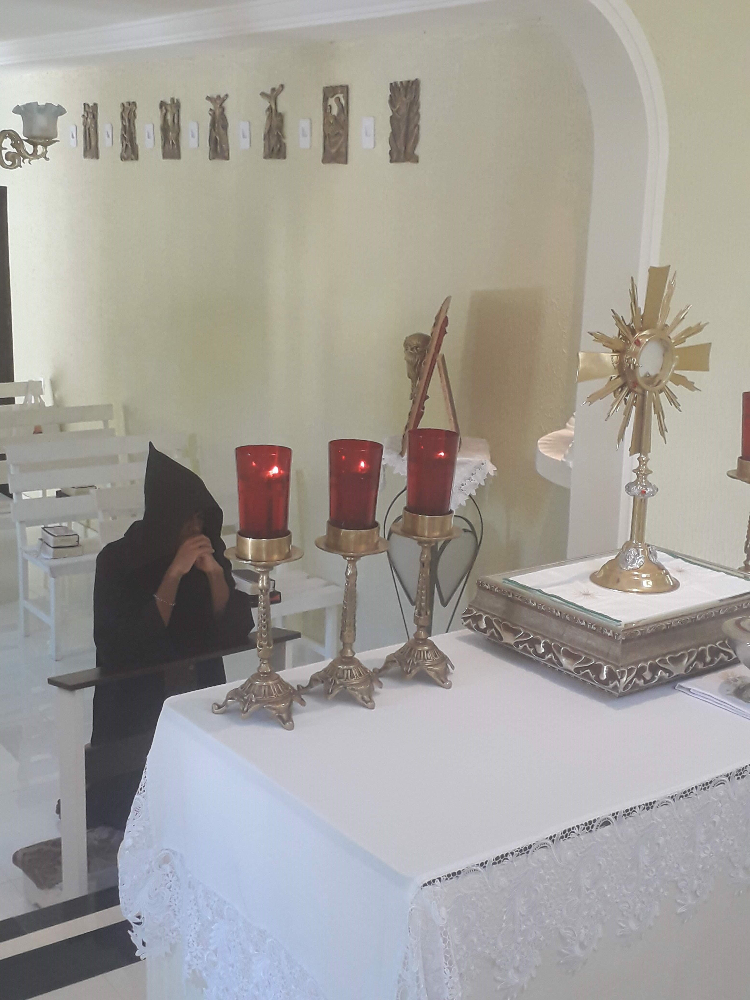

Quem Somos?

Somos os Filhos e Filhas de São Bento do Coração Eucarístico de Jesus, uma Fraternidade de Vida Religiosa com Ramo Masculino, Feminino e Leigos Consagrados, fundada na Arquidiocese de Aracaju, que vive o seguimento de Cristo a partir das diretrizes e orientações da Espiritualidade Beneditina. Também vivemos diariamente da Adoração ao Santíssimo Sacramento, pois, nosso Pai Fundador Abba Francisco fez essa preciosa descoberta, de que Jesus na Santíssima Eucaristia é a fonte inesgotável de santidade, e nos ensina com a seguinte afirmação: “Na adoração buscamos preencher nosso interior da presença de Jesus Ressuscitado, para ir ao encontro do Cristo crucificado que está nos irmãos necessitados, daqueles que são pobres dos bens espirituais e materiais". Assim tentamos dar uma resposta ao apelo da Igreja, que na pessoa do nosso querido Papa Francisco, vem pedindo uma Igreja em saída, em direção às periferias existenciais e geográficas.
Vida Religiosa
É formada por irmãos e irmãs que se consagram realizando a Oblação conforme a Regra de São Bento e buscam responder radicalmente ao chamado de Jesus por meio de uma vida evangélica, ofertando integralmente sua vida a Deus, por meio da profissão solenemente dos Votos de Obediência, Estabilidade e Santidade.
Leigos Consagrados
São pessoas de vida secular, casais, solteiros que se unem ao Carisma da Fraternidade por meio da Oração Litúrgica, e se consagram a Nosso Senhor Jesus Cristo, fazendo solenemente e renovando anualmente a Oblação com Voto de Serviço a Deus, por meio da Fraternidade.
  Carisma
A partir dos ensinamentos do nosso Venerável Pai São Bento nosso Carisma é viver a busca de Deus seguindo os passos do Cristo Obediente, essa é a vocação do monge. E assim como São Bento na Regra diz ao monges: NADA ANTEPOR AO OFÍCIO DIVINO (Cap. 43, 3 RSB) nós buscamos manter a fidelidade à Liturgia das Horas rezando diante do Santíssimo Sacramento. Pois, nosso Abba, o Irmão Francisco sempre nos ensina e deixa claro que tudo que existe e é inspirado a ser feito na nossa Fraternidade é fruto da presença de Jesus Eucarístico em nosso meio.
Finalidade
Conduzir o maior número de almas à Fonte inesgotável de Santidade, que é Jesus Cristo presente na Santa Eucaristia, a partir da experiência de nosso Pai Fundador e conforme o CIC 1324: A Eucaristia é “fonte e ápice de toda a vida cristã”, na santíssima Eucaristia está contido todo o tesouro espiritual da Igreja, isto é, o próprio Cristo.
Espiritualidade Beneditina
Como ensina nosso Pai Bento a vida do monge se sustenta no seu
principal lema: Ora et Labora: oração e trabalho. Por isso nosso dia a
dia é vivido com Adoração, Oração, estudo e trabalho.
A Tradição Monástica diz que Bento na sua grande sabedoria, para
santificar a vida dos monges dividiu as horas do dia em três partes:
8 horas de Oração
8 horas de Trabalho
8 horas de Descanso
Resultado = 24 horas da Vida de um Monge


Sendo que a característica mais marcante da Oração fica com o louvor
elevado aos Céus por meio dos Salmos: O SALMODIAR! Assim, podemos
afirmar que o monge vive dos Salmos, pois, cantar os Salmos é cantar
Nosso Senhor Jesus Cristo! E junto ao lema de São Bento que orienta
nossas vidas, o Irmão Francisco Vítima do Amor, nosso Fundador pelas
experiências desses poucos anos tem classificado a Comunidade como a
Escola do Serviço do Senhor:
Schola Dominici Servitii – Escola do Serviço do Senhor
Escola (Schola): Partindo do ponto que ninguém nasceu
sabendo e a própria vida é uma eterna escola. Que todos se
conscientizem que o objetivo de todos os membros da Comunidade São
Bento é aprender.
Serviço (Servitii): O modo como queremos aprender é
SERVINDO, imitando Nosso Senhor Jesus Cristo, que disse: Eu vim para
servir e não para ser servido.
Senhor (Dominici): O senhor é o CENTRO de nossa
vivência. Nós aprendemos com Jesus; na Escola de Jesus; e o serviço
que exercemos é para Jesus, para a Glória do Senhor.